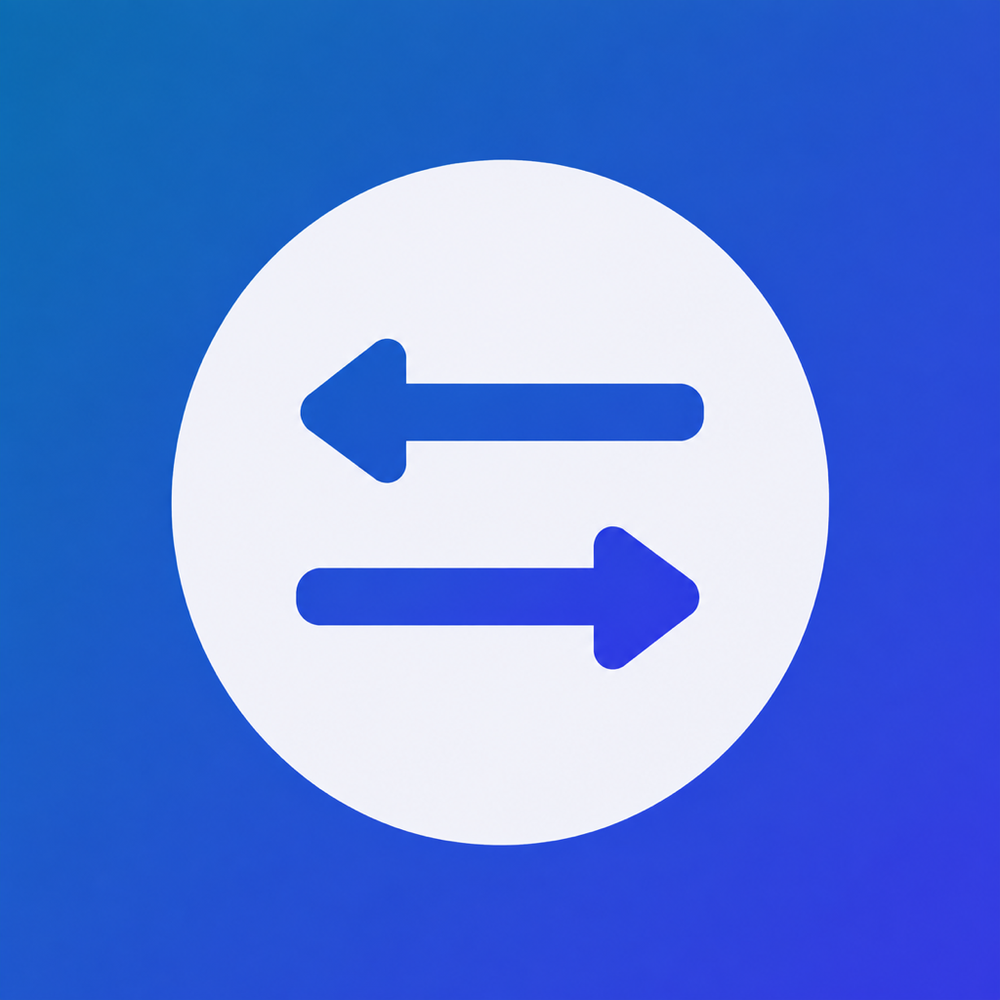

01
安全配对
Secure pairing
扫描 Mac 上的一次性二维码，建立设备间加密身份，不创建 Code Pocket 账号。
Scan a one-time QR code on your Mac to establish encrypted device identity. No Code Pocket account is required.

Code PocketiPhone × Mac
iPhone × Mac
把 Mac 上的编码智能体安全带到 iPhone。查看项目与会话、跟进实时进度，并在需要时继续工作。
Securely bring the coding agent on your Mac to iPhone. Browse projects and conversations, follow live progress, and continue work wherever you are.
当前版本仅支持 Codex CLI 0.149.0 或更高版本
Currently supports Codex CLI 0.149.0 or later only
Code Pocket 由 iPhone App 与独立原生 macOS App「Code Pocket Bridge」组成。项目文件和 Provider 凭据留在 Mac，手机只接收正式建模并经过加密的数据。
Code Pocket combines an iPhone app with the native macOS companion Code Pocket Bridge. Project files and provider credentials stay on your Mac; the phone receives only modeled, encrypted data.
扫描 Mac 上的一次性二维码，建立设备间加密身份，不创建 Code Pocket 账号。
Scan a one-time QR code on your Mac to establish encrypted device identity. No Code Pocket account is required.
按项目查看真实会话、消息、计划、命令、文件变更和智能体活动。
Browse real conversations, messages, plans, commands, file changes, and agent activity by project.
同一网络优先使用局域网，离开后可通过端到端加密的公网 Relay 恢复连接。
Prefer the local network when available, then recover through an end-to-end encrypted internet relay when away.